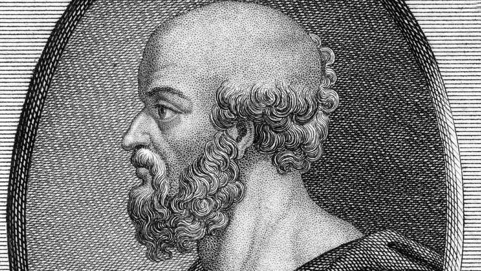

Welcome to the Mathematical World!
Eratosthenes
Ancient Greek Mathematician, Geographer, Astronomer, and Poet (c. 276 BCE – 194 BCE)
Eratosthenes was born in Cyrene, a city in modern-day Libya, and later became the chief librarian at the Library of Alexandria in Egypt — one of the most important centers of knowledge in the ancient world. He made many contributions to science, but is most famous for being the first person to calculate the circumference of the Earth with surprising accuracy.
Measuring the Earth’s Circumference
Eratosthenes had heard that at noon on the summer solstice in the Egyptian city of Syene (now Aswan), the Sun was directly overhead, and vertical objects cast no shadow. However, at the same time in Alexandria (north of Syene), vertical objects did cast a shadow.
He measured the angle of the shadow in Alexandria and found it to be about 7.2 degrees — or \(\frac{1}{50}\) of a full circle (360 degrees). Knowing the distance between Syene and Alexandria was approximately 5,000 stadia (about 800 kilometers), he used simple geometry to estimate the Earth’s total circumference.
Formula:
\[
\text{Circumference} = \text{Distance} \times \left(\frac{360}{\text{Angle}}\right)
\]
Substituting values:
\[
\text{Circumference} = 5,000 \times \left(\frac{360}{7.2}\right) = 5,000 \times 50 = 250,000 \text{ stadia}
\]
Depending on the length of a stadion (estimates vary), this corresponds roughly to 39,000 to 46,000 kilometers — incredibly close to the modern value of about 40,075 kilometers.
This was a brilliant achievement using only shadows, geometry, and logical reasoning.
Invention of Geography
Eratosthenes is often called the “Father of Geography.” He was the first to use the word “geography” and created one of the earliest maps of the known world using a grid system of latitude and longitude.
He also divided the Earth into five climate zones:
- Two frigid zones (north and south)
- Two temperate zones
- One torrid zone around the equator
He helped organize global geography and attempted to measure the sizes of continents and the distances between them.
Sieve of Eratosthenes
Eratosthenes contributed to mathematics with his famous algorithm to find prime numbers, called the “Sieve of Eratosthenes.”
It works as follows:
- Write down all numbers from 2 to some maximum number.
- Eliminate all multiples of 2, then multiples of 3, then multiples of 5, and so on.
- The remaining numbers that have not been eliminated are all prime numbers.
This method is still taught in schools today and is one of the earliest examples of an algorithm.
Other Contributions
Eratosthenes attempted to calculate the distances to the Sun and Moon, though his results were not accurate due to limitations of the tools available. He also worked on calendar reform and tried to improve the leap year system.
Known as a polymath — a person skilled in many fields — Eratosthenes was respected for his wide-ranging knowledge. Despite being nicknamed “Beta” (meaning second-best in everything) by some critics, he is remembered as a genius who used logical thinking to understand the size and shape of the Earth thousands of years before modern science.
Legacy
Eratosthenes’ work in measuring the Earth changed how people saw the world. He proved that the Earth was round and measurable using simple tools. His mapping system and geographical thinking helped build the foundation of cartography and Earth sciences.